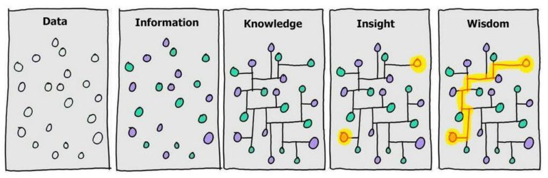
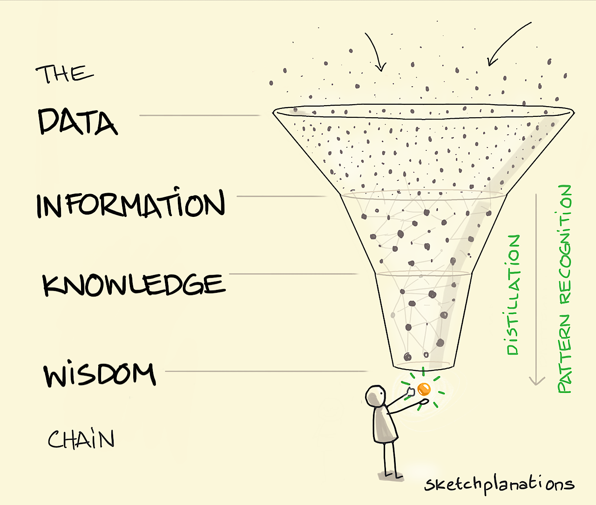

🎯 Bu Haftanın Kazanımları
- "Data/datum" kelimelerinin kökenini ve veri ile bilgi arasındaki farkı açıklayabilir
- Insight (içgörü) kavramını gerçek dünya örnekleriyle tanımlayabilir
- Veri patlamasının nedenlerini ve büyük verinin 5V'sini somut örneklerle bilir
- Excel'in neden yetmediğini ve dağıtık sistemlere neden ihtiyaç duyulduğunu kavrar
- DIKW piramidini (veri → bilgi → bilgi birikimi → bilgelik) açıklayabilir
- Yapılandırılmış, yarı-yapılandırılmış, yapılandırılmamış veri ayrımını bilir
- İşaretli (labeled) ve işaretsiz (unlabeled) veri kavramlarını tanır
- API, web scraping, crawler gibi veri toplama yöntemlerini açıklayabilir
- Text ve binary dosya farkını, Python ile dosya okuma/yazma yapabilir
- CSV ve JSON formatlarını detaylı şekilde anlayabilir ve Python ile işleyebilir
- Pandas kütüphanesiyle temel veri okuma, keşif ve filtreleme yapabilir
- Kaggle, HuggingFace gibi veri platformlarını tanır ve hesap açabilir
📊 Bölüm 1: Veri Nedir? — Tanım, Köken ve Önemi

📖 "Data" Kelimesinin Kökeni
"Data" kelimesi Latince "datum" sözcüğünün çoğuludur. Latince'de dare fiili "vermek" anlamına gelir. Datum bu fiilin geçmiş zaman ortacıdır (past participle) ve "verilmiş olan şey" (something given) demektir. Çoğulu olan data ise "verilmiş olan şeyler" — yani gerçek dünyadan elde edilen, henüz işlenmemiş ham gerçekler.
Türkçe'deki "veri" kelimesi de aynı mantıkla "vermek" fiilinden türetilmiştir. Yani hem İngilizce'de hem Türkçe'de bu kelime dışarıdan bize verilen, gözlemlenen, ölçülen şeyler fikrini taşır.
Gramer kurallarına göre data çoğuldur ve "The data are collected" denmelidir. Ancak günlük ve modern İngilizce'de data tekil bir isim gibi kullanılır: "The data is collected." Her iki kullanım da kabul edilmektedir. Akademik metinlerde ise "datum" (tek bir veri noktası) hâlâ kullanılır.
| Terim | Dil | Anlam | Örnek Kullanım |
|---|---|---|---|
| Dare | Latince (fiil) | Vermek (to give) | Kök fiil — datum ve data buradan türer |
| Datum | Latince (tekil) | Verilmiş olan tek bir şey | "This datum suggests a temperature of 38°C" |
| Data | Latince→İngilizce (çoğul) | Verilmiş olan şeyler | "Big data is transforming industries" |
| Veri | Türkçe | Data'nın Türkçe karşılığı | "Vermek" fiilinden türetilmiş (TDK, 1960'lar) |
| Information | İngilizce | Bilgi — işlenmiş veri | "Data becomes information when processed" |
| Insight | İngilizce | İçgörü, kavrayış — derin anlam | "Customer insights drive business decisions" |
📌 Veri ile Bilgi Arasındaki Fark
Veri ile bilgiyi karıştırmak çok kolaydır. Aralarındaki farkı net anlamak, bu dersin en temel yapı taşlarından biridir:
- 38.5 — tek başına hiçbir anlam ifade etmez
- "İstanbul" — bir şehir adı, ama ne bağlamda?
- 1453 — bir sayı, ne anlama geliyor?
- [23, 45, 67, 12, 89] — bir sayı listesi, nedir bunlar?
Veri bağlamdan yoksundur. Ne, neden, nerede sorusuna cevap vermez.
- 38.5 → "Hastanın vücut sıcaklığı 38.5°C"
- "İstanbul" → "Sipariş İstanbul'dan geldi"
- 1453 → "İstanbul'un fetih yılı 1453"
- [23, 45, 67, 12, 89] → "Öğrencilerin sınav notları, ort: 47.2"
Bilgi, veriye bağlam (context) eklenmesiyle elde edilir.
Tek bir veri noktasını bir bulmaca parçası gibi düşünün. Tek başına bir parça anlamsızdır. Ama doğru yere koyduğunuzda resmin bir parçası ortaya çıkar — bu bilgidir. Tüm parçaları birleştirdiğinizde resmin tamamını (büyük tabloyu) görürsünüz — bu da içgörüdür (insight).
💎 "Insight" (İçgörü) Nedir?
Insight (Türkçe: içgörü, kavrayış), büyük veri dünyasının en değerli çıktısıdır. Insight, veriden elde edilen derin, beklenmeyen ve eyleme dönüştürülebilir anlam demektir. Basitçe: "Aha! İşte bu yüzden!" anı.
Veri: 1 milyon satış kaydı
Bilgi: "Cuma günleri satış %30 artıyor"
Insight: "Müşteriler maaş gününden sonraki ilk cuma alışveriş yapma eğiliminde — Cuma günlerine özel kampanya düzenle!"
Veri: 50.000 hasta kaydı
Bilgi: "Kış aylarında grip vakaları artıyor"
Insight: "Grip vakalarının artışı hava nemine değil, kapalı mekanlarda geçirilen süreye bağlı — havalandırma iyileştirilmeli!"
Veri: 10 milyon tweet
Bilgi: "Ürün hakkında %60 pozitif yorum var"
Insight: "Pozitif yorumların %80'i 18-24 yaş grubundan, ama en çok satış 35-44 yaş grubuna — gençlerin tavsiyesi yaşlıları etkiliyor!"
🌍 Veri Neden Bu Kadar Önemli?
21. yüzyılda veri, "yeni petrol" olarak adlandırılıyor (bu ifade ilk kez 2006'da İngiliz matematikçi Clive Humby tarafından kullanıldı). Ancak ham petrol gibi, ham veri de işlenmeden pek bir işe yaramaz. Veriyi değerli kılan, onu bilgiye ve içgörüye (insight) dönüştürebilmektir.
Petrol ham haliyle yakıt olarak kullanılamaz; rafine edilmesi gerekir. Aynı şekilde ham veri de işlenmeden değersizdir. İşlenmiş petrol nasıl ekonomileri ayakta tutuyorsa, işlenmiş veri de modern şirketlerin kararlarını yönlendiriyor:
- 🏪 Walmart, kasırga öncesi satış verilerini analiz ederek kasırga yaklaşırken raflara çilek Pop-Tart koyar — çünkü veri bu ürünün kasırga öncesi %7 kat arttığını gösterdi.
- 🎬 Netflix, izleme verilerinize göre dizi önerir. "House of Cards" dizisi tamamen veri analizine dayanarak üretildi (Kevin Spacey + David Fincher + politik drama = izlenme garantisi).
- 🚗 Tesla, tüm araçlarından gelen sürüş verisini toplayarak otonom sürüş algoritmasını sürekli iyileştirir — her Tesla kullanıcısı aslında bir veri kaynağıdır.
- 🏥 Google DeepMind, göz tarama verilerini analiz ederek 50+ göz hastalığını doktorlardan daha doğru teşhis eden bir yapay zeka geliştirdi.
⏰ Neden Şimdi? — Veri Her Zaman Vardı!
Veri aslında insanlık tarihi kadar eski bir kavram. Eski Mısırlılar papirüse nüfus sayımı yazardı, Osmanlılar tahrir defterleri tutardı. Peki neden "büyük veri" kavramı son 15-20 yılda bu kadar önemli hale geldi?
| Faktör | Açıklama | Sonuç |
|---|---|---|
| 📱 İnternet & Akıllı Telefonlar | Dünya nüfusunun %60+'ı internet kullanıyor. Herkes sürekli veri üretiyor. | Veri miktarı katlanarak arttı |
| 💰 Ucuzlayan Depolama | 1 GB depolama: 1980'lerde $100.000+, bugün < $0.01 | Her şeyi saklamak mümkün hale geldi |
| ⚡ İşlem Gücü (Moore Yasası) | İşlemci hızı her ~2 yılda ikiye katlanıyor | Devasa veri setlerini işleyebiliyoruz |
| 🌐 IoT (Nesnelerin İnterneti) | Sensörler, kameralar, akıllı cihazlar sürekli veri üretiyor | İnsan üretmese bile makineler veri üretiyor |
| 🧠 Yapay Zeka & ML | Makine öğrenmesi algoritmaları veriden öğrenebiliyor | Veri ne kadar çoksa, model o kadar iyi |
| 🏢 İş Dünyası Rekabeti | Veriye dayalı karar veren şirketler %5-6 daha verimli | Veri kullanmayan rekabette geri kalıyor |
Büyük verinin atası sayılabilecek bir olay: Londra'da 1854 kolera salgınında doktor John Snow (evet, isim tesadüf 😄), ölüm verilerini bir haritaya işleyerek suyun kirlenmesinden kaynaklandığını kanıtladı. Bu, tarihteki ilk "veri görselleştirme" ve "veri tabanlı karar verme" örneklerinden biridir. Üstelik mikrop teorisi henüz bilinmiyordu — sadece veri konuştu!
💥 İnternet Çağında Veri Patlaması (Data Explosion)
İnternetin yaygınlaşmasıyla üretilen veri miktarı inanılmaz bir hızla artıyor. Ama sadece internet değil — akıllı telefonlar, sensörler, sosyal medya, IoT cihazları, güvenlik kameraları, araçlar, hastaneler, bankalar… neredeyse her şey sürekli veri üretiyor. İnsan üretmese bile makineler üretiyor.
Bir perspektif vermek gerekirse: siz bu cümleyi okurken, dünyada tahminen 1.7 MB veri kişi başına her saniye üretiliyor. İşte bazı çarpıcı istatistikler:
- 📧 231 milyon e-posta gönderiliyor
- 🔍 6.3 milyon Google araması yapılıyor
- 📱 66 bin saat Netflix izleniyor
- 💬 16 milyon mesaj gönderiliyor (WhatsApp, iMessage)
- 📸 65 bin fotoğraf Instagram'a yükleniyor
- 🐦 360 bin tweet atılıyor
- 2010: 2 Zettabyte
- 2020: 64 Zettabyte
- 2025: 181 Zettabyte (tahmini)
- 2030: 612 Zettabyte (tahmini)
1 Zettabyte = 1 trilyon Gigabyte! 😱
| Birim | Kısaltma | Boyut | Günlük Karşılık |
|---|---|---|---|
| Byte | B | 1 karakter | Tek bir harf |
| Kilobyte | KB | ~1.000 B | Kısa bir metin dosyası |
| Megabyte | MB | ~1.000 KB | Bir fotoğraf (3-5 MB) |
| Gigabyte | GB | ~1.000 MB | Bir film (1-2 GB) |
| Terabyte | TB | ~1.000 GB | 500 saatlik HD video |
| Petabyte | PB | ~1.000 TB | ABD Kongre Kütüphanesi'nin 50 katı |
| Exabyte | EB | ~1.000 PB | İnternetteki tüm web sayfaları (~) |
| Zettabyte | ZB | ~1.000 EB | Dünyada yılda üretilen toplam veri |
"Tabloyu Excel'de açsak olmaz mı?" — Hayır! İşte somut sebepleri:
- 📊 Excel'in satır limiti 1.048.576 satır. Bir e-ticaret sitesinin günlük tıklama verisi bunun 10 katı olabilir.
- 🐌 10 MB'lık bir CSV'yi bile Excel dakikalarca açabilir. 1 GB'lık bir dosya? Çökme garantili.
- 🖥️ Excel tek bilgisayarın RAM'inde çalışır. 100 GB veriyi 8 GB RAM'li bir bilgisayara sığdıramazsınız.
- 🔄 Excel'de gerçek zamanlı (real-time) veri işleme mümkün değildir.
İşte bu yüzden Hadoop, Spark, Kafka gibi dağıtık sistemlere ihtiyaç var: veriyi birden fazla bilgisayara yayıp paralel işliyorlar. Bu derste bunları öğreneceğiz!
📐 Büyük Verinin 5V'si (The 5 V's of Big Data)
Peki bir veri ne zaman "büyük veri" sayılır? Sadece boyutu büyük olması yetmez. Büyük veri, geleneksel araçlarla (Excel, tek sunucu, basit SQL) işlenemeyecek kadar büyük, hızlı ve karmaşık veri kümelerini tanımlar. Bu kavram genellikle 5V ile karakterize edilir. İlk 3V (Volume, Velocity, Variety) 2001 yılında Gartner analisti Doug Laney tarafından tanımlandı; sonradan Veracity ve Value eklendi.
- 📹 YouTube'a dakikada 500 saat video yükleniyor
- 📘 Facebook günde 4 Petabyte veri üretiyor
- 🔬 CERN parçacık hızlandırıcısı saniyede 1 Petabyte ham veri üretiyor (bunun ancak %0.001'i saklanabiliyor!)
Problem: Bu kadar veriyi Excel'de açamazsınız. Hadoop, Spark gibi dağıtık sistemler tam da bu yüzden geliştirildi.
- 📈 Borsa verileri milisaniye içinde değişir — 1 saniye gecikme milyonlarca dolar kayıp demek
- 💳 Kredi kartı dolandırıcılığı işlem anında tespit edilmeli, sonra zaten para gitti
- 🚦 Otonom araçlar anlık sensör verisini değerlendirmeli, 1 saniyelik gecikme kaza demek
Kavram: Batch processing (yığın işleme) vs Stream processing (akış işleme). İkisini de bu derste öğreneceğiz.
- 📊 Yapılandırılmış: SQL tabloları, CSV dosyaları (%20)
- 📋 Yarı-yapılandırılmış: JSON, XML, log dosyaları (%10)
- 📄 Yapılandırılmamış: E-postalar, tweetler, fotoğraflar, videolar (%70-80)
Problem: Bir hastanenin veritabanı (tablo) + röntgen görüntüleri (resim) + doktor notları (metin) = hepsi farklı format. Birleştirmek zor!
- 🗑️ Garbage In, Garbage Out (GIGO): Çöp veri girersen, çöp sonuç alırsın
- 📱 Twitter'da botlar sahte trendler oluşturuyor — bu veri güvenilir mi?
- 📊 Anket verilerinde insanlar gerçeği söylemeyebilir (toplumsal baskı etkisi)
Çözüm: Veri temizleme (data cleaning), veri doğrulama (validation), aykırı değer (outlier) tespiti — Hafta 12'de detaylı göreceğiz.
- 🏪 Walmart kasırga öncesi çilek Pop-Tart satışlarını analiz edip raflara koyar — satışlar %7x arttı
- 🎬 Netflix veri analizi sayesinde "House of Cards" dizisini üretti — tarihin ilk data-driven dizisi
- 💰 McKinsey'e göre veri odaklı şirketler, rakiplerine göre %23 daha kârlı
Mesaj: Veri tek başına değersizdir. Onu insight'a dönüştüren süreç değer yaratır.
Büyük veri = Çok veri (Volume) + Hızlı akan (Velocity) + Çeşitli formatlarda (Variety) + Güvenilirliği sorgulanması gereken (Veracity) + İş değeri çıkarılabilecek (Value) veri kümeleri.
Bir veri kümesi bu 5 özelliğin hepsini veya birkaçını barındırıyorsa, artık geleneksel araçlarla değil, büyük veri teknolojileriyle (Hadoop, Spark, Kafka...) işlenmelidir. Bu derste bu araçları öğreneceğiz!
📚 Okuma ve İzleme Önerileri
Aşağıdaki kaynaklar bu bölümdeki konuları farklı açılardan ele alıyor. Hepsini incelemeniz gerekmez, ama en az 2-3 tanesine göz atmanızı tavsiye ediyoruz:
| Kaynak | Tür | Süre / Boyut | Link |
|---|---|---|---|
| DOMO — Data Never Sleeps (her yıl güncellenen infografik) | 📊 İnfografik | 1 sayfa | domo.com/data-never-sleeps |
| How Much Data Is Created Every Day? | 📄 Makale | ~10 dk | explodingtopics.com |
| Big Data In 5 Minutes — Simplilearn | 🎬 Video (EN) | 5 dk | YouTube |
| Büyük Veri Nedir? — IBM Türkiye | 🎬 Video (TR) | ~5 dk | YouTube |
| What is Big Data? — Fireship | 🎬 Video (EN) | ~5 dk | YouTube |
| The Human Face of Big Data (Belgesel) | 🎥 Belgesel | 60 dk | YouTube'da ara |
| John Snow ve Kolera Haritası | 📄 Makale | ~5 dk | Wikipedia |
| Clive Humby: "Data is the new oil" | 📄 Makale | ~3 dk | ana.blogs.com |
| Veri Okuryazarlığı Nedir? | 📄 Blog | ~5 dk | Tableau — Data Literacy |
- 📕 "Everybody Lies" — Seth Stephens-Davidowitz: Google arama verilerinin insanlar hakkında ortaya koyduğu şaşırtıcı gerçekler. Çok eğlenceli ve kolay bir okuma.
- 📗 "Weapons of Math Destruction" — Cathy O'Neil: Büyük veri ve algoritmaların toplumda yarattığı eşitsizlikler. Verinin karanlık yüzü.
- 📘 "Big Data" — Viktor Mayer-Schönberger & Kenneth Cukier: Büyük veriye giriş için klasik kaynak.
📊 Bölüm 2: DIKW Piramidi
"Veri" kelimesini her gün duyuyoruz ama veri tam olarak nedir? Ve "büyük veri" neden bu kadar önemli? Bunu anlamak için veri hiyerarşisinden (DIKW piramidi) başlayalım.
DIKW Piramidi (Data → Information → Knowledge → Wisdom)
Ham, işlenmemiş gerçekler
Örn: 38.5"] --> I["📊 BİLGİ (Information)
İşlenmiş, anlamlı veri
Örn: Hastanın ateşi 38.5°C"] I --> K["🧠 BİLGİ BİRİKİMİ (Knowledge)
Bilginin yorumlanması
Örn: Hasta yüksek ateşli, enfeksiyon olabilir"] K --> W["💡 BİLGELİK (Wisdom)
Doğru karar verme
Örn: Antibiyotik tedavisi başlanmalı"]

| Katman | Ne Demek? | Günlük Hayat Örneği | Büyük Veri Örneği |
|---|---|---|---|
| Veri | Ham, işlenmemiş gerçekler | "25", "İstanbul", "Yağmurlu" | Milyonlarca satırlık log dosyası |
| Bilgi | İşlenmiş, bağlamlandırılmış veri | "İstanbul'da hava 25°C ve yağmurlu" | Günlük ortalama sıcaklık tablosu |
| Bilgi Birikimi | Bilgiden çıkarılan anlam | "Yağmurda şemsiye almalıyım" | Yağış trendleri ve mevsimsel kalıplar |
| Bilgelik | Doğru zamanda doğru karar | "Yağmur devam edecek, dışarı çıkmayı ertele" | Hava durumu tahmin modeli |
Veri Türleri: Yapılandırılmış, Yarı-Yapılandırılmış, Yapılandırılmamış
Veriler yapılarına göre üç kategoriye ayrılır. Bu ayrımı bilmek önemlidir çünkü hangi aracı kullanacağımız buna bağlıdır.
Örnekler: Excel tabloları, SQL veritabanları, CSV dosyaları
Araçlar: SQL, Pandas, Excel
Oran: Tüm verilerin ~%20'si
Örnekler: JSON, XML, HTML, log dosyaları
Araçlar: Python json, NoSQL (MongoDB)
Oran: Tüm verilerin ~%10'u
Örnekler: Metin belgeleri, resimler, videolar, ses dosyaları, e-postalar
Araçlar: NLP, bilgisayar görüşü, derin öğrenme
Oran: Tüm verilerin ~%70-80'i
İşaretli vs İşaretsiz Veri (Labeled vs Unlabeled Data)
Makine öğrenmesinde veriler bir de işaretli (labeled) ve işaretsiz (unlabeled) olarak ayrılır. Bu ayrım, hangi öğrenme yöntemini kullanacağımızı belirler.
Her veri noktasının bir etiketi / doğru cevabı var.
- 📧 E-posta → "spam" veya "spam değil"
- 🖼️ Fotoğraf → "kedi" veya "köpek"
- 📊 Öğrenci notu → "geçti" veya "kaldı"
Kullanım: Gözetimli öğrenme (Supervised Learning)
Veri var ama etiketi/doğru cevabı yok.
- 📧 Binlerce e-posta — hangisi spam bilmiyoruz
- 🖼️ Binlerce fotoğraf — ne olduğu belirtilmemiş
- 👥 Müşteri verileri — grupları bilinmiyor
Kullanım: Gözetimsiz öğrenme (Unsupervised Learning)
Veri Nereden Gelir? — Veri Toplama Yöntemleri
Büyük veride veriler birçok farklı kaynaktan toplanır:
| Yöntem (TR) | İngilizce | Açıklama | Örnek |
|---|---|---|---|
| API | Application Programming Interface | Programlar arası veri alışverişi. Uygulamalar birbirleriyle API üzerinden konuşur. | Twitter API, Hava durumu API |
| Web Kazıma | Web Scraping | Web sayfalarından veri çekme. HTML içeriğini parse ederek veri elde etme. | Fiyat karşılaştırma, haber toplama |
| Ağ Örümceği | Web Crawler / Spider | Web sitelerini otomatik olarak dolaşıp indexleme. Sayfadan sayfaya link takip eder. | Googlebot, Bing crawler |
| Sensörler | Sensors / IoT | Fiziksel ortamdan veri toplayan cihazlar. | Sıcaklık, nem, GPS sensörleri |
| Log Dosyaları | Log Files | Sistemlerin otomatik tuttuğu kayıtlar. | Sunucu logları, uygulama logları |
| Formlar/Anketler | Forms / Surveys | Kullanıcılardan doğrudan toplanan veri. | Google Forms, anket siteleri |
| Açık Veri | Open Data | Kamuya açık paylaşılan veri setleri. | Kaggle, TÜİK, data.gov |
requests + BeautifulSoup ile basit scraping yapılabilir; Scrapy kütüphanesi ise profesyonel crawling için kullanılır.
📁 Bölüm 3: Dosya Kavramları
Bilgisayarda her şey dosyalarda saklanır. Büyük veri ile çalışırken sürekli dosyaları okuyup yazacağız. O yüzden dosya kavramını iyi anlamak önemlidir.
Text Dosyalar vs Binary Dosyalar
Bilgisayardaki dosyalar temelde iki kategoriye ayrılır:
- İçeriği okunabilir karakterlerden oluşur
- Notepad/TextEdit ile açıp okuyabilirsiniz
- Her satır bir satır sonu karakteri (\n) ile biter
- Boyutu genellikle daha büyük (çünkü her karakter ayrı kodlanır)
Örnekler:
.txt, .csv, .json, .py, .html, .xml, .md, .log
- İçeriği 0 ve 1'lerden (byte dizilerinden) oluşur
- Notepad ile açarsanız anlamsız karakterler görürsünüz
- Özel programlarla açılması gerekir
- Boyutu genellikle daha küçük (sıkıştırılmış olabilir)
Örnekler:
.xlsx, .docx, .pdf, .jpg, .png, .mp4, .mp3, .zip, .parquet
.xlsx (Excel) dosyası bir binary dosyadır! .csv ise text dosyadır. İkisi de tablo verisi içerir ama yapıları tamamen farklıdır. Bu farkı birazdan detaylıca göreceğiz.
Python ile Dosya Okuma ve Yazma
Python'da dosya işlemleri open() fonksiyonu ile yapılır. Bu fonksiyon bir dosya nesnesi döndürür ve bu nesne üzerinden okuma/yazma işlemleri yapılır.
Dosya Açma Modları
| Mod | Açıklama | Dosya Yoksa? | Dosya Varsa? |
|---|---|---|---|
"r" | Okuma (Read) — Varsayılan mod | ❌ Hata verir | Baştan okur |
"w" | Yazma (Write) | ✅ Yeni dosya oluşturur | ⚠️ İçeriği siler, baştan yazar |
"a" | Ekleme (Append) | ✅ Yeni dosya oluşturur | Sonuna ekler |
"r+" | Okuma + Yazma | ❌ Hata verir | Okur ve yazar |
"rb" | Binary okuma | ❌ Hata verir | Binary olarak okur |
"wb" | Binary yazma | ✅ Yeni dosya oluşturur | Binary olarak yazar |
Text Dosya Yazma
# ─── Dosyaya Yazma ───
# Yöntem 1: with bloğu (önerilen ✅)
# 'with' bloğu dosyayı otomatik kapatır
with open("ornek.txt", "w", encoding="utf-8") as dosya:
dosya.write("Merhaba Dünya!\n")
dosya.write("Bu ilk satır.\n")
dosya.write("Bu ikinci satır.\n")
dosya.write("Büyük Veri Teknolojileri dersi.\n")
print("✅ Dosya başarıyla yazıldı!")
# Yöntem 2: writelines ile birden fazla satır
satirlar = [
"Birinci satır\n",
"İkinci satır\n",
"Üçüncü satır\n"
]
with open("ornek2.txt", "w", encoding="utf-8") as dosya:
dosya.writelines(satirlar)
# Yöntem 3: Sonuna ekleme (append)
with open("ornek.txt", "a", encoding="utf-8") as dosya:
dosya.write("Bu satır sonradan eklendi.\n")utf-8 kullanmak, Türkçe karakterlerin (ş, ç, ğ, ü, ö, ı, İ) doğru görünmesini sağlar. Her zaman encoding="utf-8" parametresini eklemenizi öneriyoruz.
Text Dosya Okuma
# ─── Dosyadan Okuma ───
# Tüm içeriği tek seferde okuma
with open("ornek.txt", "r", encoding="utf-8") as dosya:
icerik = dosya.read()
print("=== Tüm İçerik ===")
print(icerik)
# Satır satır okuma (büyük dosyalar için önerilir!)
print("=== Satır Satır ===")
with open("ornek.txt", "r", encoding="utf-8") as dosya:
for satir_no, satir in enumerate(dosya, 1):
print(f"Satır {satir_no}: {satir.strip()}")
# Tüm satırları listeye alma
with open("ornek.txt", "r", encoding="utf-8") as dosya:
satirlar = dosya.readlines()
print(f"\nToplam {len(satirlar)} satır var.")
print(f"İlk satır: {satirlar[0].strip()}")
print(f"Son satır: {satirlar[-1].strip()}")dosya.read() tüm dosyayı RAM'e yükler. 10 GB'lık bir dosyada bunu yaparsanız bilgisayarınızın belleği dolabilir! Büyük dosyaları her zaman satır satır (for satir in dosya) okuyun. Bu, büyük verinin temel prensiplerinden biridir.
📊 Bölüm 4: CSV Formatı
CSV Nedir?
CSV (Comma-Separated Values — Virgülle Ayrılmış Değerler), tablo verilerini düz metin olarak saklayan bir formattır. Her satır bir kayıt (record), her virgülle ayrılmış parça bir alan (field) temsil eder.
isim,yas,bolum,not_ortalamasi
Ahmet,21,Bilişim,85.5
Ayşe,22,Bilişim,92.3
Mehmet,20,Bilişim,78.1
Fatma,21,Bilişim,88.7Yukarıdaki CSV dosyasını tablo olarak düşünürsek:
| isim | yas | bolum | not_ortalamasi |
|---|---|---|---|
| Ahmet | 21 | Bilişim | 85.5 |
| Ayşe | 22 | Bilişim | 92.3 |
| Mehmet | 20 | Bilişim | 78.1 |
| Fatma | 21 | Bilişim | 88.7 |
CSV'nin Temel Özellikleri
- ✅ Düz metin dosyasıdır — herhangi bir metin editörüyle açılabilir
- ✅ Platform bağımsızdır — Windows, Mac, Linux hepsinde çalışır
- ✅ Basit yapısı sayesinde neredeyse her program okuyabilir
- ✅ Küçük boyutludur — aynı veri Excel'den daha az yer kaplar
- ❌ Formatlama bilgisi yok — renk, kalın yazı, formül saklayamaz
- ❌ Tek bir sayfa/tablo — birden fazla sheet tutulamaz
- ❌ Veri tipi bilgisi yok — her şey metin olarak saklanır
CSV Türleri (Ayraç Çeşitleri)
"CSV" adında "virgül" geçse de, aslında farklı ayraçlar (delimiter/separator) kullanılabilir:
| Tür | Ayraç | Dosya Uzantısı | Örnek Satır | Kullanım Alanı |
|---|---|---|---|---|
| CSV (Virgül) | , | .csv | Ahmet,21,85.5 | Uluslararası standart |
| TSV (Tab) | \t (Tab tuşu) | .tsv veya .csv | Ahmet 21 85.5 | Metin içinde virgül varsa |
| SSV (Noktalı virgül) | ; | .csv | Ahmet;21;85.5 | Avrupa ülkeleri (ondalık virgül) |
| Pipe-separated | | | .csv veya .txt | Ahmet|21|85.5 | Veri ambarları, eski sistemler |
sep=";" parametresini kullanmayı unutmayın.
Python ile CSV Okuma ve Yazma
csv Modülü ile (Yerleşik)
import csv
# ─── CSV Dosyası Oluşturma ───
ogrenciler = [
["isim", "yas", "bolum", "not_ortalamasi"],
["Ahmet", 21, "Bilişim", 85.5],
["Ayşe", 22, "Bilişim", 92.3],
["Mehmet", 20, "Bilişim", 78.1],
["Fatma", 21, "Bilişim", 88.7],
]
with open("ogrenciler.csv", "w", newline="", encoding="utf-8") as dosya:
yazici = csv.writer(dosya)
for satir in ogrenciler:
yazici.writerow(satir)
print("✅ CSV dosyası oluşturuldu!")
# ─── CSV Dosyası Okuma ───
print("\n=== CSV Dosyası İçeriği ===")
with open("ogrenciler.csv", "r", encoding="utf-8") as dosya:
okuyucu = csv.reader(dosya)
baslik = next(okuyucu) # İlk satır (başlık)
print(f"Sütunlar: {baslik}")
print("-" * 40)
for satir in okuyucu:
print(f" {satir[0]:10s} | Yaş: {satir[1]} | Not: {satir[3]}")
# ─── DictReader ile okuma (daha pratik!) ───
print("\n=== DictReader ile ===")
with open("ogrenciler.csv", "r", encoding="utf-8") as dosya:
okuyucu = csv.DictReader(dosya)
for satir in okuyucu:
print(f" {satir['isim']} - {satir['bolum']} - Not: {satir['not_ortalamasi']}")CSV ve Excel (XLS/XLSX) Karşılaştırması
Öğrenciler sıklıkla CSV ve Excel'i karıştırır. İkisi de tablo verisi tutar ama yapıları çok farklıdır:
| Özellik | CSV (.csv) | Excel (.xlsx) |
|---|---|---|
| Dosya Türü | 📄 Text (düz metin) | 🔢 Binary (sıkıştırılmış XML) |
| Açma Yöntemi | Herhangi bir metin editörü | Excel, LibreOffice veya özel kütüphane |
| Formatlama | ❌ Yok (renk, kalın, italik yok) | ✅ Var (renk, yazı tipi, kenarlık vb.) |
| Formüller | ❌ Yok | ✅ Var (=TOPLA, =EĞER vb.) |
| Çoklu Sayfa | ❌ Tek tablo | ✅ Birden fazla sheet |
| Grafikler | ❌ Yok | ✅ Var |
| Boyut | ✅ Çok küçük | ❌ Daha büyük |
| Satır Limiti | ✅ Sınırsız | ❌ 1.048.576 satır |
| Hız | ✅ Çok hızlı okunur | ❌ Daha yavaş |
| Programla İşleme | ✅ Çok kolay | ⚠️ Özel kütüphane gerekir (openpyxl) |
| Büyük Veride? | ✅ Yaygın kullanılır | ❌ Tercih edilmez (performans) |
📋 Bölüm 5: JSON Formatı
JSON Nedir?
JSON (JavaScript Object Notation), verileri anahtar-değer çiftleri halinde saklayan, insanlar tarafından okunabilir bir veri formatıdır. Adında "JavaScript" geçse de, tüm programlama dillerinde kullanılır.
Bugün internette veri alışverişinin büyük çoğunluğu JSON formatındadır. API'ler (web servisleri) JSON döndürür, MongoDB gibi NoSQL veritabanları JSON benzeri yapıda veri saklar.
JSON'un Yapısı
{
"isim": "Ahmet",
"soyisim": "Yılmaz",
"yas": 21,
"ogrenci_mi": true,
"boy": 1.75,
"adres": null,
"bolum": "Bilişim Teknolojileri",
"notlar": [85, 92, 78, 95],
"iletisim": {
"email": "ahmet@mail.com",
"telefon": "0555-123-4567"
},
"hobiler": ["programlama", "yüzme", "satranç"]
}JSON'da Kullanılabilen Veri Tipleri
| JSON Tipi | Açıklama | Örnek | Python Karşılığı |
|---|---|---|---|
| String | Metin (çift tırnak ile!) | "Merhaba" | str |
| Number | Sayı (tam veya ondalıklı) | 42, 3.14 | int, float |
| Boolean | Mantıksal değer | true, false | True, False |
| Null | Boş/tanımsız değer | null | None |
| Array | Sıralı liste | [1, 2, 3] | list |
| Object | Anahtar-değer çiftleri | {"a": 1} | dict |
- JSON'da
true/false(küçük harf) → Python'daTrue/False(büyük harf) - JSON'da
null→ Python'daNone - JSON'da anahtarlar sadece çift tırnak
"key"→ Python'da tek tırnak da olur - JSON'da son elemandan sonra virgül olmaz → Python'da olabilir (trailing comma)
İç İçe (Nested) JSON
JSON'un gerçek gücü, iç içe yapılar oluşturabilmesidir. Gerçek dünyada API'lerden gelen veriler genellikle iç içe geçmiş yapılardadır:
{
"universite": "XYZ Üniversitesi",
"bolum": "Bilişim Teknolojileri",
"donem": "2025-2026 Bahar",
"ders": {
"ad": "Büyük Veri Teknolojileri",
"saat": "2+3",
"akts": 5
},
"ogrenciler": [
{
"id": 1,
"isim": "Ahmet Yılmaz",
"notlar": {
"vize": 85,
"final": 90,
"ortalama": 88.0
}
},
{
"id": 2,
"isim": "Ayşe Demir",
"notlar": {
"vize": 92,
"final": 88,
"ortalama": 89.6
}
}
],
"toplam_ogrenci": 2,
"aktif": true
}Python ile JSON İşlemleri
import json
# ─── Python Sözlüğünden JSON Oluşturma ───
ogrenci = {
"isim": "Ahmet",
"yas": 21,
"notlar": [85, 92, 78],
"aktif": True,
"adres": None,
"iletisim": {
"email": "ahmet@mail.com",
"telefon": "0555-123-4567"
}
}
# Sözlüğü JSON string'e çevirme
json_str = json.dumps(ogrenci, ensure_ascii=False, indent=4)
print("=== JSON String ===")
print(json_str)
# ─── JSON Dosyasına Yazma ───
with open("ogrenci.json", "w", encoding="utf-8") as dosya:
json.dump(ogrenci, dosya, ensure_ascii=False, indent=4)
print("\n✅ JSON dosyası yazıldı!")
# ─── JSON Dosyasından Okuma ───
with open("ogrenci.json", "r", encoding="utf-8") as dosya:
okunan = json.load(dosya)
print("\n=== Okunan Veri ===")
print(f"İsim: {okunan['isim']}")
print(f"E-posta: {okunan['iletisim']['email']}")
print(f"Notlar: {okunan['notlar']}")
print(f"Not ortalaması: {sum(okunan['notlar']) / len(okunan['notlar']):.1f}")ensure_ascii=False— Türkçe karakterlerin doğru görünmesi içinindent=4— Güzel görünüm için 4 boşluk girintisort_keys=True— Anahtarları alfabetik sırala (opsiyonel)
JSON Dizisi (Array of Objects)
Birden fazla kayıt içeren JSON dosyaları genellikle bir dizi (array) şeklindedir:
import json
# Birden fazla öğrenci
ogrenciler = [
{"isim": "Ahmet", "yas": 21, "not": 85},
{"isim": "Ayşe", "yas": 22, "not": 92},
{"isim": "Mehmet", "yas": 20, "not": 78},
{"isim": "Fatma", "yas": 21, "not": 88},
]
# JSON dosyasına yaz
with open("sinif.json", "w", encoding="utf-8") as f:
json.dump(ogrenciler, f, ensure_ascii=False, indent=2)
# JSON dosyasından oku ve işle
with open("sinif.json", "r", encoding="utf-8") as f:
sinif = json.load(f)
# Veri analizi
print(f"Toplam öğrenci: {len(sinif)}")
notlar = [o["not"] for o in sinif]
print(f"En yüksek not: {max(notlar)}")
print(f"Ortalama: {sum(notlar) / len(notlar):.1f}")
# Filtreleme
basarili = [o for o in sinif if o["not"] >= 80]
print(f"\n80 ve üzeri alanlar:")
for o in basarili:
print(f" 🎓 {o['isim']}: {o['not']}")CSV vs JSON Karşılaştırması
| Özellik | CSV | JSON |
|---|---|---|
| Yapı | Düz tablo (satır-sütun) | İç içe geçebilen ağaç yapısı |
| Okunabilirlik | Tablo formatında kolay | Hiyerarşik yapı için kolay |
| Boyut | ✅ Daha küçük | ❌ Daha büyük (anahtar isimleri tekrarlanır) |
| Veri tipi | ❌ Hepsi metin | ✅ String, number, boolean, null |
| İç içe veri | ❌ Desteklemez | ✅ Tam destek |
| Web API'ler | ❌ Nadir | ✅ Standart format |
| Büyük tablolar | ✅ İdeal | ⚠️ Şişebilir |
| Şeması | İlk satır başlık | Her kayıtta anahtar ismi var |
- CSV: Büyük tablolar, veri analizi, raporlama, veritabanı import/export
- JSON: API'ler, yapılandırma dosyaları, iç içe veriler, web uygulamaları, NoSQL veritabanları
🐼 Bölüm 6: Pandas Kütüphanesine Giriş
Pandas, Python'da veri analizi için en çok kullanılan kütüphanedir. Adı "Panel Data" (panel veri) kelimelerinden gelir. CSV, Excel, JSON, SQL gibi kaynaklardan veri okuyabilir ve güçlü veri işleme yetenekleri sunar.
Neden Pandas?
import csv
# Önce örnek CSV dosyasını oluşturalım
with open("veri.csv", "w", newline="", encoding="utf-8") as f:
yazici = csv.writer(f)
yazici.writerows([
["isim", "yas", "bolum", "not"],
["Ahmet", 21, "Bilişim", 85],
["Ayşe", 22, "Bilişim", 92],
["Mehmet", 20, "Elektrik", 78],
["Fatma", 21, "Bilişim", 88],
])
toplam = 0
sayac = 0
with open("veri.csv") as f:
okuyucu = csv.DictReader(f)
for satir in okuyucu:
if satir["bolum"] == "Bilişim":
toplam += float(satir["not"])
sayac += 1
print(f"Ort: {toplam/sayac:.1f}")import pandas as pd
# veri.csv önceki blokta oluşturuldu
df = pd.read_csv("veri.csv")
ort = df[df["bolum"] == "Bilişim"]["not"].mean()
print(f"Ort: {ort:.1f}")
# 10+ satır kod vs 3 satır kod!DataFrame ve Series
Pandas'ın iki temel veri yapısı vardır:
Pandas Kurulumu ve İlk Adımlar
# Kurulum (Google Colab'da zaten kurulu!)
pip install pandas
# Jupyter/Colab'da:
# !pip install pandasDataFrame Oluşturma
import pandas as pd
# ─── 1) Sözlükten DataFrame oluşturma ───
veri = {
"isim": ["Ahmet", "Ayşe", "Mehmet", "Fatma", "Ali"],
"yas": [21, 22, 20, 21, 23],
"bolum": ["Bilişim", "Bilişim", "Elektrik", "Bilişim", "Elektrik"],
"not_ort": [85.5, 92.3, 78.1, 88.7, 65.4],
}
df = pd.DataFrame(veri)
print(df)
print(f"\nBoyut: {df.shape}") # (5, 4) → 5 satır, 4 sütunCSV Dosyasından Okuma
import pandas as pd
# CSV'den okuma (en sık kullanılan yöntem!)
# df = pd.read_csv("ogrenciler.csv")
# Türkçe CSV'ler için (noktalı virgül ayraçlı)
# df = pd.read_csv("veri.csv", sep=";", encoding="utf-8")
# Örnek olarak sözlükten oluşturalım
df = pd.DataFrame({
"isim": ["Ahmet", "Ayşe", "Mehmet", "Fatma", "Ali", "Zeynep"],
"yas": [21, 22, 20, 21, 23, 22],
"bolum": ["Bilişim", "Bilişim", "Elektrik", "Bilişim", "Elektrik", "Bilişim"],
"not_ort": [85.5, 92.3, 78.1, 88.7, 65.4, 91.0],
"devamsizlik": [2, 0, 5, 1, 8, 0]
})
# ─── Temel Keşif Fonksiyonları ───
# İlk 5 satır (varsayılan)
print("=== head() ===")
print(df.head())
# Son 3 satır
print("\n=== tail(3) ===")
print(df.tail(3))
# Genel bilgi
print("\n=== info() ===")
print(df.info())
# İstatistiksel özet
print("\n=== describe() ===")
print(df.describe())
# Sütun isimleri
print(f"\nSütunlar: {list(df.columns)}")
# Boyut
print(f"Boyut: {df.shape[0]} satır, {df.shape[1]} sütun")
# Veri tipleri
print(f"\nVeri Tipleri:\n{df.dtypes}")Veri Seçme ve Filtreleme
import pandas as pd
df = pd.DataFrame({
"isim": ["Ahmet", "Ayşe", "Mehmet", "Fatma", "Ali", "Zeynep"],
"yas": [21, 22, 20, 21, 23, 22],
"bolum": ["Bilişim", "Bilişim", "Elektrik", "Bilişim", "Elektrik", "Bilişim"],
"not_ort": [85.5, 92.3, 78.1, 88.7, 65.4, 91.0],
})
# ─── Sütun Seçme ───
print("=== Tek sütun (Series) ===")
print(df["isim"])
print("\n=== Birden fazla sütun (DataFrame) ===")
print(df[["isim", "not_ort"]])
# ─── Koşullu Filtreleme ───
print("\n=== Notu 80'den yüksek olanlar ===")
basarili = df[df["not_ort"] > 80]
print(basarili)
print("\n=== Bilişim bölümündekiler ===")
bilisim = df[df["bolum"] == "Bilişim"]
print(bilisim)
# ─── Birden Fazla Koşul ───
print("\n=== Bilişim + Not > 85 ===")
filtre = df[(df["bolum"] == "Bilişim") & (df["not_ort"] > 85)]
print(filtre)
# ─── Sıralama ───
print("\n=== Nota göre sıralama (büyükten küçüğe) ===")
print(df.sort_values("not_ort", ascending=False))
# ─── Yeni Sütun Ekleme ===
df["harf_notu"] = df["not_ort"].apply(
lambda x: "AA" if x >= 90 else "BA" if x >= 80 else "BB" if x >= 70 else "CB" if x >= 60 else "FF"
)
print("\n=== Harf Notu Eklendi ===")
print(df)Gruplama ve Toplama (groupby)
import pandas as pd
df = pd.DataFrame({
"isim": ["Ahmet", "Ayşe", "Mehmet", "Fatma", "Ali", "Zeynep"],
"bolum": ["Bilişim", "Bilişim", "Elektrik", "Bilişim", "Elektrik", "Bilişim"],
"not_ort": [85.5, 92.3, 78.1, 88.7, 65.4, 91.0],
"devamsizlik": [2, 0, 5, 1, 8, 0]
})
# Bölüme göre gruplama
print("=== Bölüm bazında ortalama not ===")
bolum_ort = df.groupby("bolum")["not_ort"].mean()
print(bolum_ort)
# Birden fazla istatistik
print("\n=== Bölüm bazında detaylı istatistik ===")
bolum_detay = df.groupby("bolum").agg({
"not_ort": ["mean", "min", "max", "count"],
"devamsizlik": "sum"
})
print(bolum_detay)
# value_counts: Benzersiz değerlerin sayısı
print("\n=== Bölüm dağılımı ===")
print(df["bolum"].value_counts())Pandas ile Farklı Formatları Okuma
| Format | Okuma | Yazma | Not |
|---|---|---|---|
| CSV | pd.read_csv("dosya.csv") | df.to_csv("dosya.csv") | En yaygın format |
| Excel | pd.read_excel("dosya.xlsx") | df.to_excel("dosya.xlsx") | openpyxl gerekir |
| JSON | pd.read_json("dosya.json") | df.to_json("dosya.json") | İç içe yapılar için dikkat |
| SQL | pd.read_sql(query, conn) | df.to_sql("tablo", conn) | Veritabanı bağlantısı gerekir |
| Parquet | pd.read_parquet("dosya.parquet") | df.to_parquet("dosya.parquet") | Büyük veri için ideal format |
| HTML | pd.read_html("url") | df.to_html("dosya.html") | Web tablolarını çekebilir |
📐 Bölüm 7: Veri Modelleme (Genel Bakış)
Veri modelleme, verilerin nasıl organize edileceğini, saklanacağını ve birbirleriyle nasıl ilişkilendirileceğini planlama sürecidir. Bir binanın mimari planı gibi düşünebilirsiniz — inşaata başlamadan önce planı çizersiniz.
Veri Modeli Türleri
NE saklanacak?
İş dünyasının bakışı"] --> B["📊 Mantıksal Model
NASIL organize edilecek?
Tablo ve ilişkiler"] B --> C["💾 Fiziksel Model
NEREDE saklanacak?
Veritabanı yapısı"]
| Model Türü | Soru | Detay Seviyesi | Kim İçin? | Örnek |
|---|---|---|---|---|
| Kavramsal | NE saklanacak? | En genel | İş analistleri, yöneticiler | "Öğrenci, Ders, Not bilgileri tutulacak" |
| Mantıksal | NASIL organize edilecek? | Orta | Veri analistleri, tasarımcılar | "Öğrenci tablosu: id, isim, bölüm sütunları" |
| Fiziksel | NEREDE, hangi teknoloji? | En detaylı | Veritabanı yöneticileri | "PostgreSQL, id INTEGER PRIMARY KEY..." |
🌍 Bölüm 8: Büyük Veri Platformları
Veri analizi ve büyük veri projelerinde en önemli şeylerden biri veri bulmaktır. Neyse ki, ücretsiz ve kaliteli veri setleri sunan platformlar var. Bu platformlarda hesap açmanızı ve keşfetmenizi şiddetle tavsiye ediyoruz!
Bu ders boyunca aşağıdaki platformlarda hesabınızın olması zorunludur:
- GitHub — Ödevler GitHub Classroom üzerinden verilecek. İlk haftanın notlarındaki yönergeleri izleyerek hesap açın.
- Kaggle — Veri setleri indirmek ve notebook'ları incelemek için
- HuggingFace — Yapay zeka modelleri ve veri setleri için
🏆 Kaggle
Google'a ait olan Kaggle, dünyanın en büyük veri bilimi topluluğudur.
- 📊 Datasets: 200.000+ ücretsiz veri seti (CSV, JSON, resim, metin...)
- 🏅 Competitions: Ödüllü yarışmalar (Netflix Prize gibi)
- 📓 Notebooks: Hazır Jupyter notebook'ları (başkalarının çözümlerini inceleyebilirsiniz)
- 📚 Learn: Ücretsiz dersler (Python, Pandas, ML...)
- ☁️ Free GPU/TPU: Ücretsiz bilgi işlem gücü
- kaggle.com adresine gidin ve ücretsiz hesap açın
- "Datasets" bölümüne girin ve "student" veya "turkey" gibi aratın
- Bir veri setini indirip Colab'da açmayı deneyin
- "Learn" bölümündeki "Pandas" kursuna göz atın (ücretsiz ve çok faydalı!)
🤗 HuggingFace
Yapay zeka ve NLP (doğal dil işleme) alanında en popüler platform. Son yıllarda veri setleri konusunda da Kaggle'a rakip oldu.
- 📊 Datasets: 100.000+ veri seti (özellikle metin ve dil verileri)
- 🤖 Models: 500.000+ hazır AI modeli
- 🚀 Spaces: Hazır demo uygulamaları
- 📚 Course: Ücretsiz NLP ve ML dersleri
Diğer Faydalı Platformlar
| Platform | URL | Özellik |
|---|---|---|
| UCI ML Repository | archive.ics.uci.edu | Akademik veri setleri (Iris, Wine, Titanic...) |
| Google Dataset Search | datasetsearch.research.google.com | Veri setleri için Google araması |
| data.gov | data.gov | ABD devlet açık verileri |
| TÜİK | data.tuik.gov.tr | Türkiye İstatistik Kurumu verileri |
| GitHub Awesome Datasets | github.com/awesome... | Kategorize edilmiş veri seti listesi |
📄 Bölüm 9: Diğer Önemli Dosya Formatları
CSV ve JSON dışında, büyük veri dünyasında sıkça karşılaşacağınız birkaç format daha var:
Apache Parquet
Parquet, büyük veri için optimize edilmiş sütun tabanlı (columnar) bir binary formattır. Spark, Pandas ve diğer büyük veri araçlarıyla doğrudan çalışır.
Tüm sütunları satır satır okur. Tek bir sütun istesen bile tüm satırı okumak zorundasın.
Ahmet, 21, Bilişim, 85 Ayşe, 22, Bilişim, 92 Mehmet,20, Elektrik,78
Her sütunu ayrı ayrı saklar. Sadece istediğin sütunu okuyabilirsin → çok daha hızlı!
isim: [Ahmet, Ayşe, Mehmet] yas: [21, 22, 20] bolum: [Bilişim, Bilişim, Elektrik] not: [85, 92, 78]
XML (Extensible Markup Language)
HTML'e benzeyen, etiket tabanlı bir veri formatıdır. Eskiden çok kullanılırdı, bugün yerini büyük ölçüde JSON'a bıraktı.
<ogrenciler>
<ogrenci>
<isim>Ahmet</isim>
<yas>21</yas>
<bolum>Bilişim</bolum>
</ogrenci>
<ogrenci>
<isim>Ayşe</isim>
<yas>22</yas>
<bolum>Bilişim</bolum>
</ogrenci>
</ogrenciler>Tüm Formatların Karşılaştırması
| Format | Tür | Okunabilir? | Boyut | Hız | Büyük Veride? |
|---|---|---|---|---|---|
| CSV | Text | ✅ Evet | Orta | Orta | Yaygın (giriş) |
| JSON | Text | ✅ Evet | Büyük | Orta | API, NoSQL |
| Excel | Binary | ❌ Özel program | Orta | Yavaş | ❌ Uygun değil |
| Parquet | Binary | ❌ Özel araç | ✅ Çok küçük | ✅ Çok hızlı | ✅ İdeal |
| XML | Text | ⚠️ Zor | Çok büyük | Yavaş | ❌ Eski |
| Avro | Binary | ❌ Özel araç | Küçük | Hızlı | ✅ Kafka, Spark |
📋 Bölüm Özeti
- ✅ Veri kavramı: Data (Latince: datum = "verilmiş şey"), veri ile bilgi arasındaki fark
- ✅ Insight (içgörü): Veriden elde edilen derin, eyleme dönüştürülebilir anlam
- ✅ Veri neden önemli? "Veri yeni petroldür" (Clive Humby), Walmart/Netflix/Tesla anekdotları
- ✅ Neden şimdi? Ucuzlayan depolama, internet, IoT, yapay zeka → veri patlaması
- ✅ Veri patlaması: Dakikada 231M e-posta, 6.3M Google araması; 2010: 2ZB → 2025: 181ZB
- ✅ Excel neden yetmiyor? 1M satır limiti, tek bilgisayar RAM'i, real-time işleme yok
- ✅ Büyük verinin 5V'si: Volume, Velocity, Variety, Veracity, Value — somut örneklerle
- ✅ DIKW piramidi: Veri → Bilgi → Bilgi Birikimi → Bilgelik (John Snow kolera haritası)
- ✅ Veri türleri: Yapılandırılmış (%20), yarı-yapılandırılmış (%10), yapılandırılmamış (%70-80)
- ✅ İşaretli vs İşaretsiz: Labeled → Supervised, Unlabeled → Unsupervised Learning
- ✅ Veri toplama yöntemleri: API, web scraping, crawler, sensörler, loglar, açık veri
- ✅ Dosya türleri: Text (.csv, .json, .py) vs Binary (.xlsx, .jpg, .parquet)
- ✅ CSV & JSON: Yapıları, Python ile okuma/yazma, csv ve json modülleri
- ✅ Pandas: DataFrame/Series, head/info/describe, filtreleme, groupby
- ✅ Veri modelleme: Kavramsal → Mantıksal → Fiziksel model
- ✅ Platformlar: Kaggle, HuggingFace, UCI, Google Dataset Search, TÜİK
- ✅ Diğer formatlar: Parquet (sütun tabanlı, hızlı), XML (eski), Avro
Python bilgilerinizi tazelemek veya derinleştirmek isterseniz, geçen dönemki ders notlarına göz atabilirsiniz:
- Henüz açmadıysanız bir GitHub hesabı oluşturun — ödevler GitHub Classroom üzerinden verilecektir
- Kaggle ve HuggingFace'te hesap açın
- Kaggle'dan ilginizi çeken bir CSV veri seti indirin
- Bu veri setini Google Colab'da Pandas ile açın ve şunları yapın:
head(),info(),describe()çıktılarını inceleyin- En az 2 farklı filtreleme yapın
- Bir sütuna göre
groupbyyapıp ortalama hesaplayın
- Aynı veriyi JSON formatında kaydedin (
df.to_json()) ve dosya boyutlarını karşılaştırın - (Bonus) Python ile kendi
.csvdosyanızı sıfırdan oluşturun (5 sütun, 10 satır)
Dosya okuma/yazma, CSV, JSON ve Pandas konularında kolaydan zora 15+ uygulamalı görev, gerçek veri setleri ve Google Colab notebookları için: